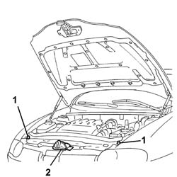
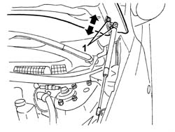
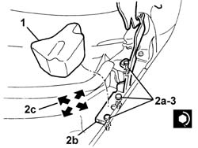

7025A10 bonnet lid - square
- Path
- Procedures > 70 FITTINGS > 7025 COMPARTMENT LIDS > 7025A bonnet lid > 7025A10 bonnet lid - square
- Kind
- repair procedure (removal / refitting; the operation number is the code)
- Applies to
- all engines; all production periods
- Interactive page
- https://sloeber94.github.io/elrnDB-a147/en/#/3025750
Applies to: engines: 1.9 JTD 16V; all production periods
Applies to: all engines; all production periods
Lift the bonnet lid.
1. If necessary, adjust the buffer blocks.
2. If necessary, adjust the lock position. 7025A34 bonnet lid lock (one) - r+r or repair .

Applies to: all engines; all production periods
1. If necessary, undo the hinge bolts and adjust the bonnet position. The arrows indicate possible movements.
Tighten the hinge bolts.
 | Fastening | Component | Ø | Value (daNm) |
|---|---|---|---|---|
- | Bolt | BONNET LID | M6 | 0.8 |

Applies to: all engines; all production periods
If the adjustments described above are insufficient, adjust bonnet lid hinge position as described below.
7055B64 Engine compartment DUST shield in front wheel arch (one), left or right - R.R. (right and left).
7055B42 Additional FRONT WHEEL ARCH (one), left or right - R.R. (right and left).
1. Remove the soundproofing.
2. Slacken the nuts (2a) securing the hinges (2b) and adjust the position until the bonnet is aligned. The arrows (2c) indicate the possible movements.
3. Tighten the nuts.
| Fastening | Component | Ø | Value (daNm) |
|---|---|---|---|---|
3 | Nut | BONNET LID HINGES | M8 | 2.4 |
Touch up the paintwork in the hinge area.
Fit the soundproofing in position.
7055B42 Additional FRONT WHEEL ARCH (one), left or right - R.R. (right and left).
7055B64 Engine compartment DUST shield in front wheel arch (one), left or right - R.R. (right and left).

Applies to: engines: 1.9 JTD 16V; all production periods
Topics linked from this page (5)
- 7025A12 Engine front sound insulation COVER - R.R.
- 7025A14 Bonnet LID - R.R.
- 7025A34 bonnet lid lock (one) - r+r or repair
- 7055B42 Additional FRONT WHEEL ARCH (one), left or right - R.R.
- 7055B64 Engine compartment DUST shield in front wheel arch (one), left or right - R.R.